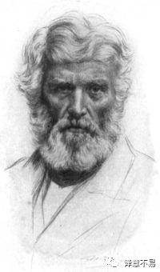

经济学是“令人沮丧的科学”这一说法的由来
我们在经济学原理类的课上，大概率会听说过类似这样一种说法，即“经济学是一门沉闷的科学”(Dismal Science)。可是事实上在很多当代修习经济学课程的人看来，除了可能中高级经济学课程中会有些吓人的公式之类的，并没有觉得有什么特别的沉闷之处，甚至有时候还觉得挺有趣的。那么这个“沉闷的科学”的名声究竟是由何而来的？它的本意到底是什么呢？这篇小文就掉掉书袋，考考古。
所谓的“沉闷的科学”其实是源于英文”Dismal Science”的翻译。这个译法虽说没有什么太大的问题，但似乎有点容易引起误解。如果从“沉闷”的中文字面意义上讲，似乎是有形容经济学是一门枯燥、乏味的学科。但是，如果从这个英文词汇最早的起源判断，它似乎更强调的是经济学（家）的主张往往是令人沮丧的、不愉快的。所以，也许把这个中译小小变换一下，译成“经济学是一门令人沮丧的科学”，也许更贴近本意一些。
Dismal Science的说法最早出现在托马斯.卡莱尔1849 年的一篇文章中文章的标题是《黑奴问题偶谈》(Occasional Discourse on the Negro Question)(http://cruel.org/econthought/texts/carlyle/carlodnq.html)。这是一篇有比较明显的种族主义主张的文章，我们只摘取其中出现了Dismal Science这一词组的一段。
Truly, my philanthropic friends, … ,the Social Science—not a “gay science,” but a rueful one—which finds the secret of this universe in “supply-and-demand,” and reduces the duty of human governors to that of letting men alone, … Not a “gay science,” I should say, like some we have heard of; no, a dreary, desolate, and indeed quite abject and distressing one; what we might call, by way of eminence, the dismal science.
诚然，我的博爱的朋友们, …, 社会科学–不是 “快乐的科学”，而是令人沮丧的科学–它声称是从 “供求关系“中发现了宇宙的秘密，并将人类统治者的职责简化为让人们顺其自然、放任自流。应该说，这不是一门像其他一些科学一样令人”愉悦的科学”。不，这是一门沉闷、无聊，实际上相当卑微和令人苦恼的科学；为了突出显示它的这些特性，我们可以将其称为 “令人沮丧的科学”。
这一大段如此贬低社会科学（经济学）的论述，似乎毫无理由且颇有些费解，要搞清楚这段话背后的含义，还需要先简单交待一下卡莱尔这个人。

Thomas Carlyle (1795-1881)是位英国思想家，我们在中学时可能学到过很多他说过的名人名言，但是似乎很少提及他的思想成了后来法西斯主义的重要思想来源。卡莱尔极度推崇历史上的 “伟人”理论。所谓伟人理论，从字面上看，其含义显而易见。这种观点认为，在有远见、有胆识、往往冷酷无情的人的领导下，历史会发生划时代的转变。伟人之不出，万古如长夜。只有伟人才能赋予我们目标，只有伟人才能定义生命的意义，只有伟人才能推动历史前进。如果没有英雄，没有如神般的伟人，就不会发生任何足以彪炳史册的事情。因此我们需要这样的伟人，如果不存在伟人，我们就创造伟人。（《论英雄、英雄崇拜和历史上的英雄事迹》（1841） On Heroes, Hero-Worship, and the Heroic in History）
在这样的潜理论的指导下，他的思想为后来的法西斯主义奠定了重要的理论基础。据称希特勒本人就极度欣赏卡莱尔的思想体系。
希特勒在垂暮之年，兵败如山倒，只有他的忠实拥护者护卫着他躲在碉堡中。根据许多传记作者的描述，希特勒在最后的日子里只能从他最崇拜的文学作品中寻求安慰。他在临终前要求他最信任的助手戈培尔为他进行最后一次朗读，朗读的就是卡莱尔的《腓特烈大帝传》。这是卡莱尔本人为他生前赞颂的一位 “伟大”人物写下恰当的墓志铭：孤独、蒙羞和死亡。
那么，卡莱尔为什么要用“dismal science”一词来形容他那个时代的经济学呢？
卡莱尔生活的年代，18 世纪末和 19 世纪自由主义革命最崇高的成就之一，除了自由贸易思想之外，就是反对奴隶制并最终废除奴隶制的运动。而卡莱尔是一个不折不扣的种族主义者，因而是废奴运动的主要反对者，他推崇一个种族对另一个种族的统治。这使得卡莱尔极度厌恶经济学家，从而也反对作为一门科学的经济学。理由非常简单：他那个时代的经济学（和经济学家们，如John Stuart Mill）是极力倡导普世权利和市场经济的，是大力反对奴隶制的。经济学认为，社会可以由拥有平等自由的人组成，一个没有主人和奴隶的社会。统治社会的是供求关系，而不是某些伟大的独裁统治者。对他来说，这是一个没有 “伟大” 的世界，没有“伟人”的世界，这样的世界前景太令人沮丧了。所以才有了以上引文中的Dismal Science的说法。
总结一下，Dismal Science，只是倡导奴隶制与种族主义的卡莱尔及其支持者们在与市场经济支持们论战时提出的贬低经济学的说法。如果现代学生知道对市场交易的攻击来自那些把黑人奴隶制理想化的人，他们会怎么想呢？总有一天，学生们会学会如何读懂现代经济学字里行间的沉默。
(本文虽标为原创，但其实也只是互联网的搬运工，欢迎任何人转载。只是因为内容以编译为主，没有信心确认编译准确及政治正确，如有同行用于教学目的，请务必自行判断准确性与合规性)